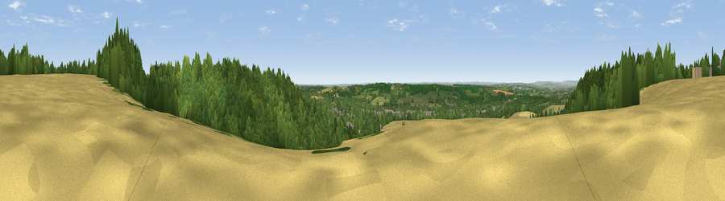

Viewpoint near Harrietsham
#16433 in England · top 17% of its area beats it · near HarrietshamWhere it is
The exact computed spot (TQ 87125 54125). Click the marker for map links.
The view, rendered

A 360° render of this exact spot computed from the terrain model, tree cover and land cover — summer colours, afternoon light, calibrated against photographs of famous viewpoints. Real trees, hedges and buildings will differ in detail.
The panorama
Grey silhouette: terrain skyline in each direction (720 bearings, Earth curvature and refraction included). Dashed green: skyline with trees (+15 m) and buildings (+8 m) as obstacles. Blue strip: how far the ground is visible on each bearing.
Where the view opens
Wedge length = distance to the farthest visible ground on that bearing (vegetation-aware). Rings at 10, 25 and 50 km.
What fills the view
43% cropland · 42% woodland · 13% grassland · 3% built-up
Angular shares of the visible panorama (visual magnitude), not map area. Landscape diversity 0.47 (0–1 Shannon).
Key numbers
More beautiful places nearby
The staircase of upgrades: each row has a higher view potential than everything closer. Driving times are estimates from straight-line distance, calibrated against real road routing — check an actual route before setting out.
| Place | Direction | Drive | Score |
|---|---|---|---|
| Viewpoint near Harrietsham | ESE · 1 km | ~4 min | 57.3 |
| Viewpoint near Hollingbourne | NW · 2 km | ~5 min | 59.1 |
| Viewpoint near Hollingbourne | NW · 4 km | ~8 min | 62.4 |
| Viewpoint near Thurnham | NW · 6 km | ~13 min | 63.6 |
| Viewpoint near Charing | ESE · 8 km | ~17 min | 68.6 |
| Viewpoint near Westwell | ESE · 13 km | ~23 min | 72.2 |
| Viewpoint near Lympne | SE · 30 km | ~46 min | 72.6 |
| Tolsford Hill | ESE · 33 km | ~50 min | 77.9 |
51.25558, 0.68026 · source: screening · position refined by local search. Computed location — check access rights before visiting.